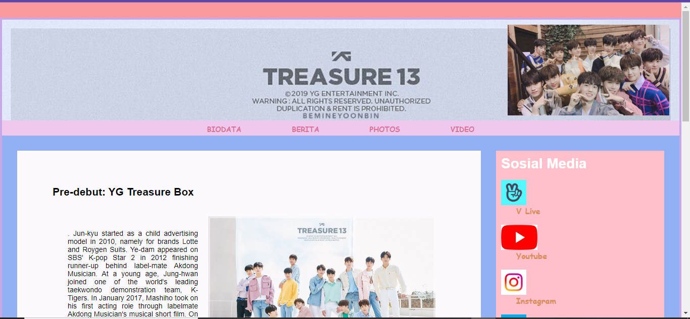
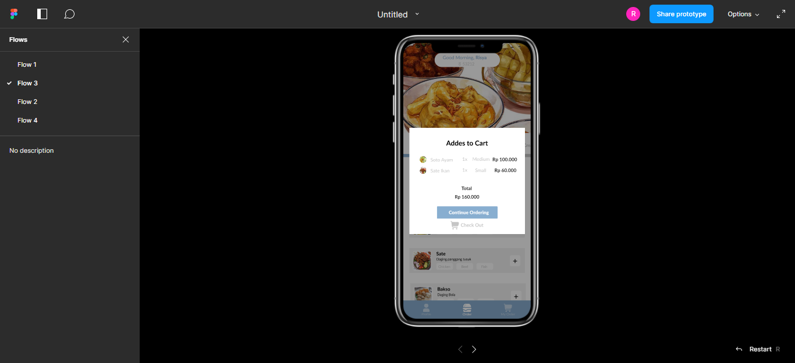

ABOUT
Saya Mahasiswa dari Universitas Bhayangkara Jakarta Raya, mengambil jurusan Informatika, angkatan 2019. Saya suka mengexplore lebih. Karena saya merasa ilmu yang saya dapatkan massih kurang. Maka dari itu saya sering mengikuti beberapa pelatihan yang gratis.
Saya juga suka membaca, terlebih lagi membaca komik. Dari gambar hingga cerita saya suka. Kadang saya mendengarkan musik ketika melakukan pekerjaan yang tidak memerlukan fokus yang lebih.
RESUME
EDUCATION
Bhayangkara Jakarta Raya University | Informatics
September 2019 - Present
- Following PKM, with a Robot theme to meet the introductory information technology UAS scores.
- Make a parallel electric current design, to meet the practical value of physics.
- Create and change the appearance of the website as exemplified, as a task given by the lecturer.
- Create a web-based cashier information system as an assignment from the course Implementasi dan
Pengujian Perangkat Lunak
SMA Negeri 3 Babelan | IPA
August 2016 – Mei 2019
- Participate in scouting activities
- Participated in a kite drawing competition at the Independence Day event at school.
- Lead a drama group to fulfill the practical value of art and culture lessons and Indonesian language
assignments.
EXPERIENCE
Yes Study Indonesia | Internship
June 2022 - August 2022
- Input the questions IELTS Practice based on Sections and Question Types that have been made into the
Flexiquiz platform.
- Create a web-based LMS with Moodle.
- Hosting an LMS that has been created with Moodle.
- Assist colleagues in working on a web-based attendance system project.
ORGANIZATION AND COMMITTEE
Bharagita Student Choir– Member
September 2019 - Present
- Singing the national anthem, campus march, and others, during events held on campus. Such as seminars,
graduations, PKKMB, and so on.
- Participate in choir competitions held on other campuses or off-campus competitions.
- Participated in Basic Education and Training events for the Bharagita student choir as a logistics division.
Which has been implemented in April 2021
- Participated in the welcoming ceremony for new members of the Bharagita student choir as a logistics
division. Which has been implemented in September 2021
Computer Science Student Executive Board - Student Division
May 2021 – May 2022
- Student representatives who can accommodate and channel student aspirations, determine program
outlines, and carry out various predetermined activities.
- Development of the potential and identity of students as complete and intact academic beings.
- Guidance and development of leadership spirit that can potentially become the nation's cadres in the future.
- Development of organizational, management, and leadership skills.
- Participated in Student Management Leadership Training events for the Computer Science Student
Executive Board as a Consumption Division. Which has been implemented in June. This activity is a work
program in the student affairs division.
- Participated in Student Leadership Basic Exercises events for the Computer Science Student Executive
Board as a Chief Executive. Which has been implemented in Desember. This activity is a work program in
the student affairs division.
- Participated in Major deliberation activities carried out by the Computer Science Student Executive Board as
a treasurer. which has been implemented in October 2021 and March 2022.
TRAINING AND COURSE
FRONT-END Web Developer | ICYCOM
- Understanding HTML.
- Build a web with basic HTML that has been learned
- Add css to the created HTML
The Basics of Becoming a Website Designer | Lore Up
- Understand about html.
- Designing the UI/UX on the html to be created.
- Create HTML according to the design that has been made.
- Add CSS to the created HTML.
Learn Basic Web Programming | dicoding
- Learn about HTML
- Learn about CSS
- Learn about Responsive Layout using Flexbox
- Learn about Basic JavaScript and DOM Manipulation
- Learn about web Storage
Cloud Fundamental Track | MBKM Independent Study - Microsoft
- Learn about Azure Fundamental
- Learn about the basics of Microsoft Power Platform
- Learn about Security, Compliance, and Identity Fundamentals
- Learn about Microsoft Azure Administrator.
- Make a final Capstone project about making LMS with Moodle
Full Stack Developer with Ruby (HTML, CSS, Ruby and Ruby on rails) | Digital Talent Scholarship – Progate
- Learn about HTML
- Learn about CSS
- Learn about Ruby
- Learn about Ruby on rails
SKILLS
- Microsoft Office ( Microsoft Word, Microsoft Excel,Microsft Power Point)
- Front-End – Basic
- Figma - Basic
- English – Basic
- Teamwork
- Communication
- Leadership
PROJECT
Tugas ICYCOM

Tugas Dicoding

Latihan membuat Kalkulator - Dicoding

Latihan membuat Aplikasi Buku - Dicoding

Latihan membuat tampilan Login

Latihan membuat Pesanan

Laporan untuk Tugas Matakuliah

Latihan membuat Layout

Latihan membuat Web Dasar

Laporan untuk Tugas Matakuliah

Tugas membuat Web dengan Power Apps

Tugas membuat Moodle

Tugas membuat tampilan interface
